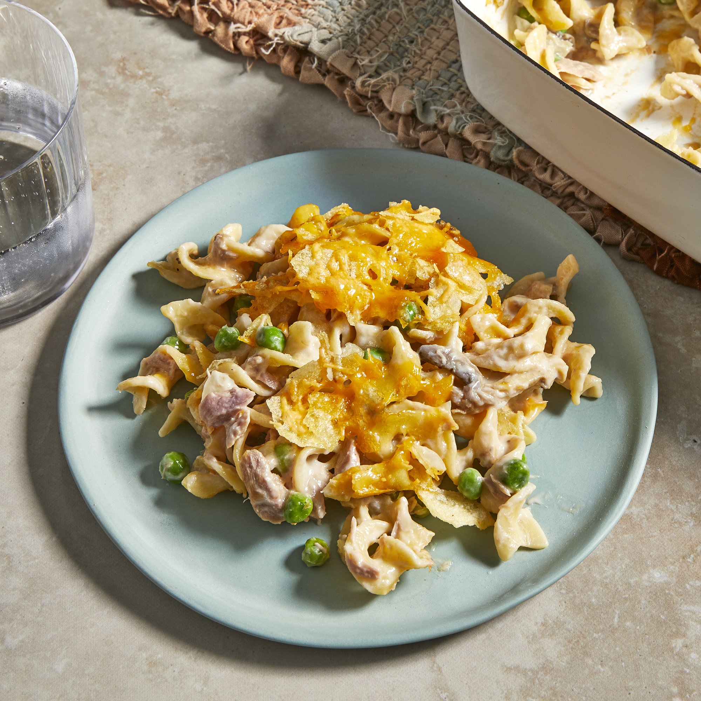

Tuna Casserole

Description
Tuna casserole is a casserole primarily made with pasta and canned tuna, with peas and corn sometimes added. The dish is often topped with potato chips, corn flakes, bread crumbs or canned fried onions.
Ingredients
- 1 (12 ounce) package egg noodles
- ¼ cup chopped onion
- 2 cups shredded Cheddar cheese
- 1 cup frozen green peas
- 2 (5 ounce) cans tuna, drained
- 2 (10.75 ounce) cans condensed cream of mushroom soup
- ½ (4.5 ounce) can sliced mushrooms
- 1 cup crushed potato chips
Steps
- Bring a large pot of lightly salted water to a boil. Cook pasta in boiling water for 8 to 10 minutes, or until al dente; drain.
- Preheat oven to 425 degrees F (220 degrees C).
- In a large bowl, thoroughly mix noodles, onion, 1 cup cheese, peas, tuna, soup and mushrooms. Transfer to a 9x13 inch baking dish, and top with potato chip crumbs and remaining 1 cup cheese.
- Bake for 15 to 20 minutes in the preheated oven, or until cheese is bubbly.